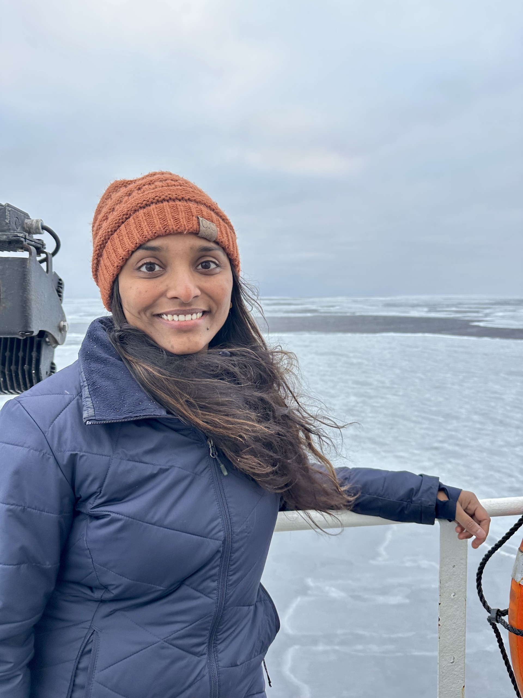

Curriculum Vitae
Postdoctoral Fellow
Monterey Bay Aquarium Research Institute (MBARI)
Multi-camera perception • 3D Reconstruction • SLAM • Underwater & Field Robotics
I build perception and mapping systems for robots operating in dynamic, visually degraded, and physically extreme environments, spanning the deep ocean, the Arctic, and the Antarctic.
My work connects multi-camera sensing, dense mapping, self-supervised perception, and long-duration field deployment. This page presents the same CV content in the visual language of the main site.

Moss Landing / Monterey Bay area
Google Scholar, GitHub, and LinkedIn linked below
Multi-modal underwater robotics, SLAM, and dense reconstruction
Presented with the same dark timeline treatment as the main page experience section.
Moss Landing, CA
Multi-modal underwater perception, dense mapping, self-supervised scene understanding, and 3D Gaussian splatting for underwater robots.
Trondheim, Norway
Multi-camera underwater situational awareness, subsea dense reconstruction, and field deployment with ROV Minerva.
Boston, MA
Toyota Research Institute collaboration on multi-modal SLAM, optimal sensor arrangement, and glacier mapping expeditions in Svalbard.
Boston, MA
PhD research on robust real-time robot perception with synchronized multi-camera systems, detection, registration, and field robotics applications.
Cambridge, MA
Driver interruptibility prediction and speech-based interaction methods for advanced driver assistance systems.
Boston, MA
Thesis: Multi-Camera Sensing for Robust Perception in Robotics. Committee included Hanumant Singh, John Leonard, Ryan Eustice, Chris Amato, and Lawson Wong.
Gainesville, FL
Anantapur, India
The International Journal of Robotics Research
arXiv preprint arXiv:2506.06476, ICRA Workshop on Field Robotics
Journal of Ocean Technology
IROS
ICRA
IEEE Robotics and Automation Letters (RA-L)
Driver for FLIR cameras with hardware synchronization support.
Generic multi-camera SLAM system for arbitrary camera configurations.
Information-theoretic optimization for camera arrangement on mobile robots.
Multi-modal SLAM dataset with cameras, IMU, and lidar across multiple floors.
3D modeling of whale-bone survey imagery to study ecological change over time.
Imaging and telemetry collection for newly forming pancake ice.
Subsea infrastructure inspection and shipwreck mapping using multi-camera sensing.
High-resolution 3D mapping of actively calving glacier fronts with an ASV.